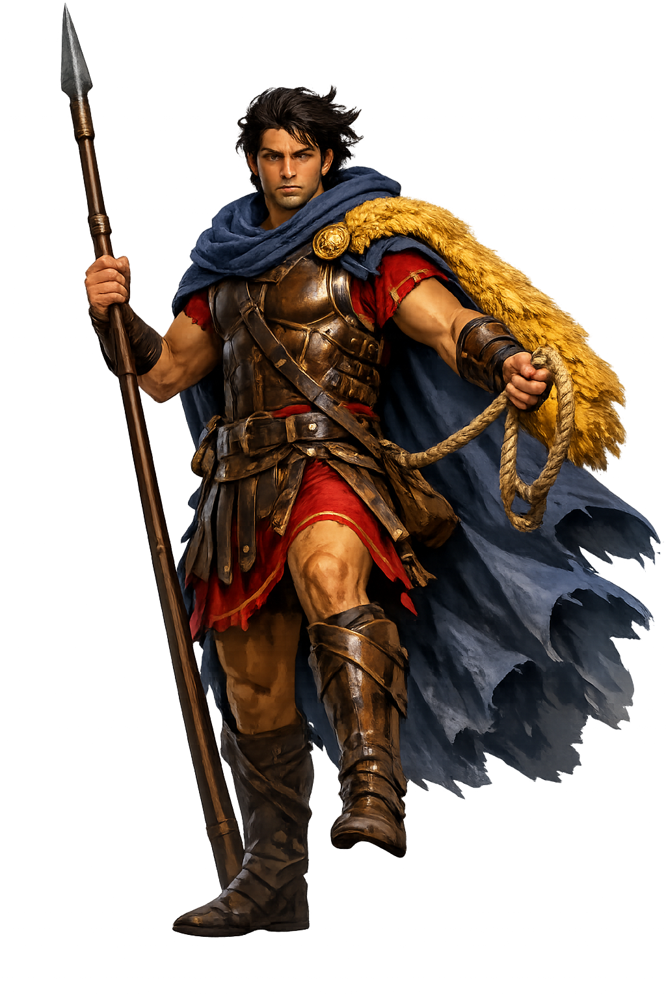

The Authentic Orthography
Heroism, the Golden Fleece · Captain of the Argo · Seeker of the Golden Fleece

Unicode restoration and ASCII comparison
Ἰάσων
The name in its original Greek form. Iásōn (Ἰάσων) is attested in the source tradition — “Healer”. Its long vowels and acute accents carry the full phonetic and orthographic weight of the source tradition.
iason
Reduced to plain iason, the name loses everything that made it specific: long vowels and acute accents. What remains is an ASCII string that machines can parse but that no longer speaks with its original voice.
Iásōn
The Unicode restoration recovers what ASCII flattened. Iásōn restores long vowels and acute accents, returning the name to its original written dignity. The domain encodes to Punycode, but the browser displays the truth.
Iásōn.com → xn--isn-ela55c.com
The non-ASCII characters in Iásōn are encoded while the ASCII remains visible. To the DNS, it is Punycode. To humanity, it is Iásōn.
How Iásōn is preserved in writing
A bespoke provenance study for Iásōn is being prepared by the PUNICODEX scholarly team.
Contribute scholarly provenance →Owned, ideal, and ASCII forms of Iásōn
Iásōn
Restores Ἰάσων. The live temple domain — iásōn.com.
Iāsōn
Restores Ἰάσων. Macron-only scholarly form (LSJ convention); the temple carries the full stress-marked restoration..
iason
Flattens Ἰάσων. The plain ASCII fallback — what DNS and legacy systems see.
How Iásōn was spoken
Heroism, the Golden Fleece, and the First Great Voyage
Iásōn is the captain of the first great sea-quest of Greek myth: the voyage of the Argo to Colchis for the Golden Fleece. His name comes from ἰάομαι, 'to heal' — yet his story is less about curing than about gathering: he is the hero whose greatest power is to summon other heroes, and to win the love of a princess whose magic does the work.
The first true ship, built by Argos the shipwright under Athena's direction; its prow held a beam from the speaking oak of Dodona.
The fleece of the flying ram that carried Phrixos to Colchis, hung in a grove of Árēs and guarded by a sleepless dragon.
Some fifty heroes — Heraklēs, Orpheus, the Dioskouroi, Atalanta in some tellings — the greatest muster before Troy.
From ἰάομαι, 'to heal' — the ironic name of a hero whose cures are worked by Medea's pharmaka, not his own hands.
Stories of Iásōn
The myth of Iásōn is the myth of the quest itself: an unjust king, an impossible errand, a band of heroes, and a prize won by cunning and love rather than by strength alone. Pindar sang it; Apollonius made it an epic; Euripides gave it its dark ending.
Pelias, who had seized the throne of Iolkos from Iásōn's father Aisōn, was warned by an oracle to beware the man wearing one sandal. Iásōn came down from Mount Pelion, where the centaur Cheirōn had reared him, and lost a sandal fording the river Anauros — carrying, Apollodorus says, an old woman who was Hera in disguise. Pelias saw the sign and set the errand he thought would kill him: fetch the Golden Fleece from the edge of the world.
The greatest heroes of the age answered the summons. The Argo sailed from Pagasai through wonders and losses — Lemnos, the land of women; the death of Hylas, which cost them Heraklēs; the boxing of Polydeukēs with Amykos — until Phineus, the blind seer, told them how to pass the Symplegades, the rocks that clashed together. A dove was loosed first; when it lost only its tail-feathers, the Argonauts rowed through on the rebound, and the rocks stood still forever.
In Colchis, King Aietēs set three labors: yoke the fire-breathing bulls, plow the field of Árēs, and slay the armed men sprung from a dragon's teeth. Hera and Athena persuaded Aphrodite to send Eros, and Medea, the king's daughter and a priestess of Hekate, fell in love with the stranger. Her ointment made Iásōn proof against fire and iron for a day; her counsel felled the dragon's brood; her charm sang the sleepless guardian to sleep, and the Fleece was taken in the night.
The homecoming was shadowed from the start: in Apollodorus's telling Medea had dismembered her brother Apsyrtos to slow the pursuit, and at Iolkos she tricked Pelias's daughters into cutting their father to pieces in a false rite of renewal. Exiled to Corinth, Iásōn put Medea aside to marry the princess Glaukē. Euripides tells the rest — the poisoned robe, the murdered children, the chariot of the Sun. Iásōn died as he had lived, by the Argo: struck in old age by a beam of the rotting ship as he slept beneath it.
Iásōn is the strangest of the great Greek heroes, because he is the least heroic by the usual measures. He slays no monster unaided; the fire-breathing bulls are mastered through an ointment, the dragon through a lullaby, the Fleece itself through a princess's love. His one distinctive gift is the gift of gathering — the summons that brought fifty heroes to one beach, and the charm that won Medea. The Greeks half-noticed this: Pindar treats him as the gentle answer to his homeland's sickness, and the tragedians show a man perpetually outmatched by the powers he sets in motion.
Enter Extended Lore